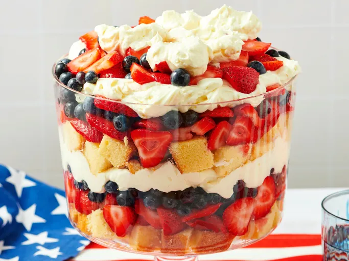

All- American Trifle
Home

Ingredients
- 1 box of vanilla cake mix
- 2 cups of vanilla pudding
- 1 cup of whipped cream
- 1 cup of mixed berries (strawberries, blueberries, raspberries)
Instructions
-
Prepare the vanilla cake according to the package instructions and let
it cool.
- Cut the cooled cake into small cubes.
-
In a trifle bowl, layer the cake cubes, vanilla pudding, whipped cream,
and mixed berries.
-
Repeat the layers until all ingredients are used, finishing with a layer
of whipped cream and berries on top.
-
Refrigerate for at least 2 hours before serving to allow the flavors to
meld together.